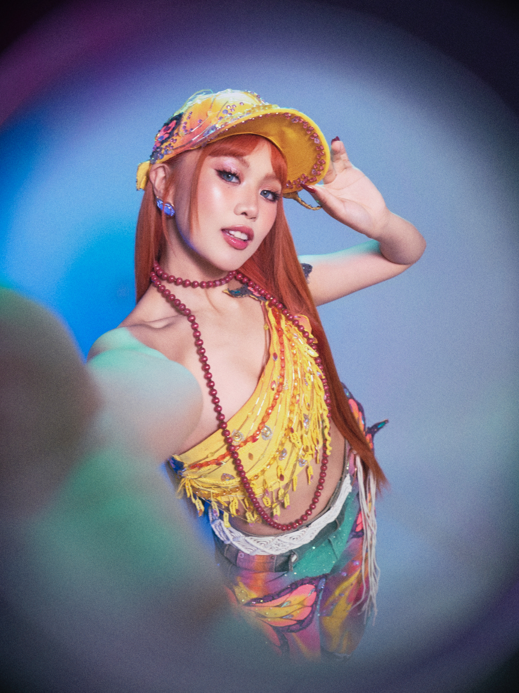

BINI MALOI

Name: Mary Loi Yves Kipte Ricalde
Stage name: Maloi
Born: May 27, 2002
Birthplace: Lemery, Batangas, Philippines
Education: Graduated senior high in 2024 as a scholar at Japan Philippine Institute of Technology with Colet, and is now studying Communications at Thames International School.
Family: One of four siblings. Family moved from Lemery to General Trias, Cavite.
Early Activities:
- Started singing at age 3, joined school activities (Chorale, Majorette, sports) and in 2018 competed with her school chorale in Malaysia, winning three gold medals.
- Auditioned for Star Hunt Academy in 2018 and became a trainee in 2019, training in vocals, dance, and performance.
- Balanced training with studies, later graduating Senior High School in 2024 as a scholar.
Position within BINI: Main Vocalist of BINI
Media & Other Activities:
- Appeared in music videos by other artists:
- RomCom by Rob Deniel (2023)
- Dilaw by Maki (2024)
- Became a regular judge on It's Showtime's Tawag ng Tanghalan Kids in Feb 2024.
Outreach / Philanthropy:
- Did a program in Tondo, Manila, with children, which she described as life-changing ('chilstar').
- Also in December 2023, she held an outreach event in Tondo plus thanks to fans and supporters.
Recognition:
- Voted Female TikTok Face of the Year at the VP Choice Awards (2025).
Interests, Personality & Lifestyle:
- Known for a distinct fashion / style aesthetic. Publications have coined **'Maloicore'** for her signature aesthetic: think ribbons, lace, soft coquette, bust, festival pouches, soft colors, plus her love for Bayonetta glasses.
- She has a playful, creative side: enjoys mixing art, fashion, performing, values authenticity.
"I've never planted the idea in my head that I'm famous. In reality, I feel like I'm still a normal person."